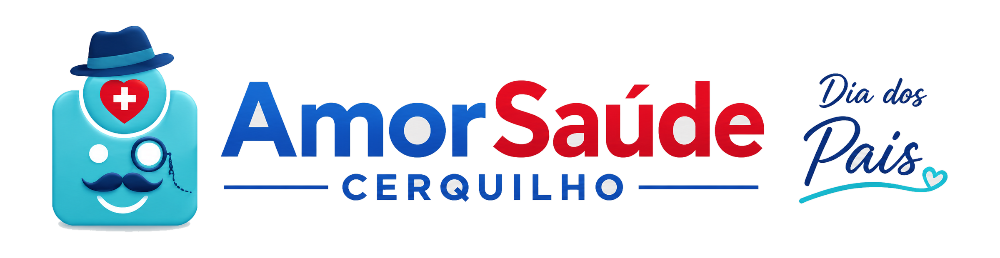

Humanização
Cuidado que acolhe,
respeita e faz a diferença.

Área do Paciente • Cerquilho
Neste Dia dos Pais, participe da nossa Pesquisa de Satisfação
e nos ajude a tornar cada atendimento ainda melhor.
Sua opinião também é uma forma de cuidar de quem você ama.
Cuidado que acolhe,
respeita e faz a diferença.
Buscamos excelência
em cada atendimento.
Sua opinião guia
nossas melhorias.
Mais carinho e atenção
em cada atendimento.
Aguardando os primeiros feedbacks reais
Avalie sua experiência
em poucos cliques.
Dê sua nota e
compartilhe sua opinião.
Sua opinião gera ações
e transforma nosso cuidado.
Responda nossa pesquisa e ajude a construir uma experiência de cuidado ainda melhor para toda a família.

Avalie a estrutura, a organização e o suporte oferecido pela unidade Cerquilho.
★★★★★ ACESSO PARA PACIENTESFeedback dos pacientesCompartilhe sua experiência com o atendimento e os serviços da unidade Cerquilho.
★★★★★